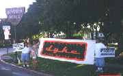

| HOME | SITE MAP |

Los Angeles Dyke March, 1997.
"The lack of a publicly accessible history is a devastating form of oppression. Lesbians face it constantly. The impact of this on art is that lines of development are obscured, broken, sometimes destroyed beyond reconstruction. We cannot casually go into a library, look up lesbian aesthetics or lesbian photography, and find a body of aesthetics or lesbian photography, and find a body of knowledge, a list of artists, or descriptions of masterpieces" (Tee Corinne).
This site owes much to the work of Tee Corinne who has tirelessly researched this area and is now working on a book about lesbian photographers.
Project: Do you collect vintage/old photos of lesbians and lesbian-like women?
I am working on a project to create a database of our lost herstory in these photographs.
If you would like to be part of this project, please contact me at yretter@chicano.ucla.edu
Note: Women listed on this site are not necessarily lesbian, but their work includes images of lesbians.
LINKS -
NOTABLE LESBIAN PHOTOGRAPHERS (List by Tee Corinne) List
LESBIAN PHOTOGRAPHERS LIST /Morgan Gwenwald Link
LESBIAN PHOTOGRAPHERS ON THE WEST COAST, 1972-1997 (Web project by Tee Corinne) Web Site.
Site Includes Bibliography Link
LESBIAN PHOTOGRAPHERS EXHIBIT (Lesbian ConneXion/s) Link
BETWEEN THE LINES (Vintage photos of lesbians and lesbian-like women) Link
LESBIAN LOS ANGELES, 1970-1990 (photos) Link
This information is made available as part of the record of lesbian history and lesbian contributions in the field of photography. It is also a method of making the work of these photographers (lesbian and not) accessible.
(This portion is under construction)
* Tee Corinne Web Site * Tee Corinne Photos Link
* Shari Diamond Link